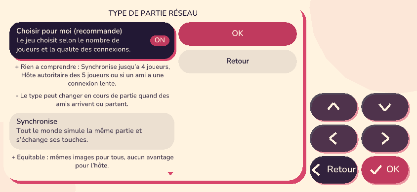
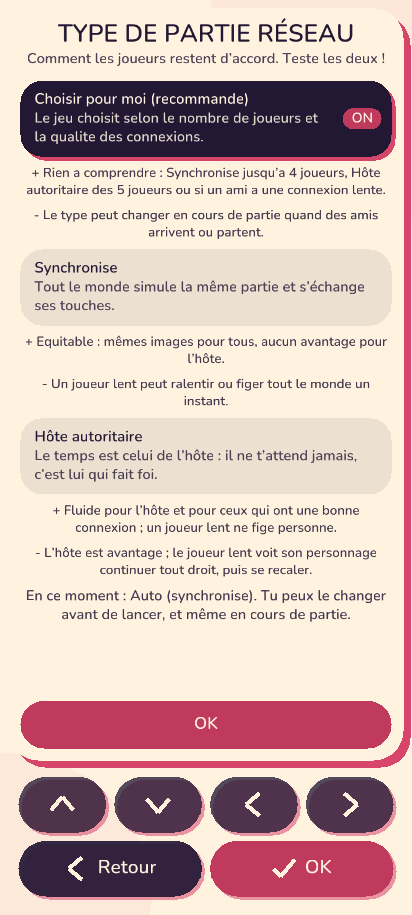

Un réglage par partie, choisi par le chef, visible de tous, changeable même en cours de partie (il ne touche pas à la simulation). Le menu : accueil en ligne puis « Type de partie réseau », ou dans le salon « Mon héros et réglages ». Chaque choix montre ses avantages (+) et inconvénients (-).
| Type | Principe | Avantages | Inconvénients |
|---|---|---|---|
| Choisir pour moi (recommandé) | Le jeu choisit selon le nombre de joueurs et la qualité des connexions. | Rien à comprendre : Synchronisé jusqu'à 4 joueurs, Hôte autoritaire dès 5 joueurs ou si un ami a une connexion lente. | Le type peut changer en cours de partie quand des amis arrivent ou partent. |
| Synchronisé | Tout le monde simule la même partie et s'échange ses touches. | Équitable : mêmes images pour tous, aucun avantage pour l'hôte. | Un joueur lent peut ralentir ou figer tout le monde un instant. |
| Hôte autoritaire | Le temps est celui de l'hôte : il ne t'attend jamais, c'est lui qui fait foi. | Fluide pour l'hôte et ceux qui ont une bonne connexion ; un joueur lent ne fige personne. | L'hôte est avantagé ; le joueur lent voit son personnage continuer tout droit, puis se recaler. Si l'hôte part, le suivant devient l'horloge. |


Crée une partie, choisis un type, joue ; à la fin, deux boutons : « C'était bien » / « Pas terrible ». Les résultats arrivent chez l'orchestrateur : python tools/telemetrie_resume.py compare les types (gel médian, reprises par 10 min, % de « pas terrible », abandons) et écrit tools/retour_jeu.md. Détails dans le dossier tools/playtest (fiche sur le type de réseau).